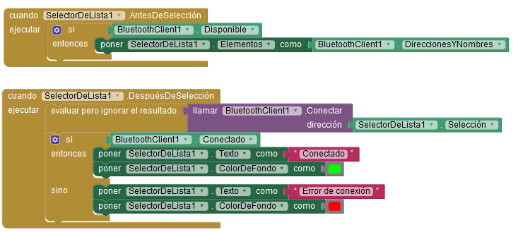
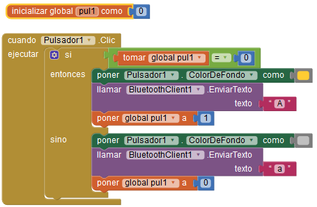
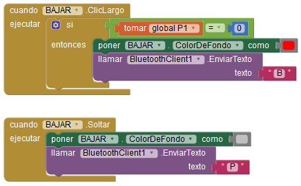
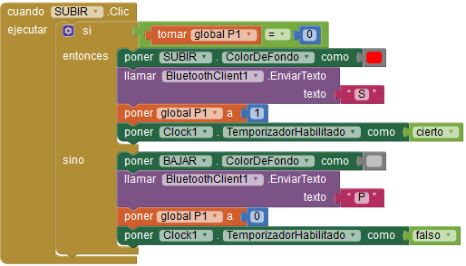
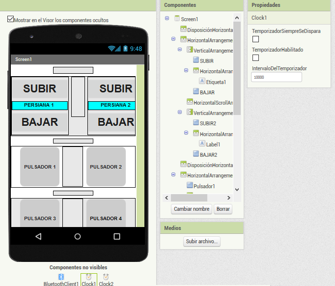

DESCARGA LA APK PARA INSTALAR
EN TU MOVIL
VER EL PROYECTO EN LA WEB APPINVENTOR. (Se
necesita una cuenta gmail)
En el proyecto, se activan y desactivan las salidas de un modulo de 8 relés, con un smartphone utilizando el bluetooth.
Para conectar el bluetooth del arduino con el smartphone, primero hay que emparejar el bluetooth del arduino en los dispositivos que bluetooth de nuestro smartphone.
Después se pulsa en conectar y si la conexión es correcta, se pone en verde el botón conectar y el bluetooth del arduino pasa de parpadear a fijo. Si no consigue conectar el botón "conectar" se pone en rojo y el bluetooth sigue parpadeando.
El programa del smartphone se ha realizado con app inventor, y consiste en:

Con cada pulsación conmuta el estado de la bombilla.
Para
encender la bombilla 1, envío por bluetooth al arduino una A, que
activa la salida conectada al rele 5 que controla la bombilla 1, para
apagarla envío una a.
( ver esquema)
Tabla de envío de caracteres para controlar las 4 bombillas.
| Encender | Apagar | |
| Bombilla 1 | A | a |
| Bombilla 2 | E | e |
| Bombilla 3 | I | i |
| Bombilla 4 | O | o |

Inicializo una variable "pul1" para el pulsador 1, si vale cero la bombilla ccnectada al rele 5 esta apagada y si esta a 1 la bombilla esta encendida.Cada persiana tiene dos pulsadores, uno para subir y otro para bajar.
En el boton subir, Con una pulsación larga, la persiana sube mientras lo mantenga pulsado.
Con una pulsación corta la persiana sube durante 10 segundos. Si en esto 10 segundos se pulsa bajar la persiana se para.
El botón bajar tiene el mismo comportamiento pero para bajar.
Para controlar las salidas de las persianas se envian los siguientes carateres por bluetooth al arduino.
| Subir | Bajar | Parar | |
| Persiana 1 | S | B | P |
| Persiana 2 | s | b | p |
la variable P1=0 la persiona no esta funcionando.
Cuando realizo una pulsación larga si la persiana no esta funcionando
pongo el fondo del pulsador rojo
y envío el texto S
cuando dejo de pulsar
Cambio el fondo a gris
y envio al arduino el texto P
para la bajada

Se puede enviar subir y bajar a la vez pero no provoca cortocicuito por el tipo de conexión eléctrica,( ver circuito de potencia)
Con una pulsación corta en subir envía subir, y a los 15 segundos envía parar.
Si en esos 15 segundos, pulso subir o bajar la persiana se para.
Con una pulsación mantenida, al pulsar envía subir y al soltar envía parar.

Con una pulsación corta
si la persiana no esta funcionando
pongo el boton en rojo
y enviío una S al arduino
pongo la variable p1 a 1 indicando que la persiana va a estar funcionando un tiempo
pongo en marcha un temporizador.
" puedo parar la persiona antes de que finalice el temporizador pulsando bajar"
Si al pulsar si la persiana esta funcionando ( p1=1)
pongo el pulsador de bajada en gris
y envio al arduino la letra P para parar el funcionamiento, y paso la variable P1 a 0 (persiana parada) y paro el temporizador.
al activarse el temporizador y pasar el tiempo programado
pongo los pulsadores subir y bajar en gris
envio una P de parada al arduino
y cambio la variable P1 a 0 indicando que la persiana esta parada
y desactivo el temporizador

SoftwareSerial
mySerial(3,4);//Rx Tx
int rele1=12;
int rele2=11;
int rele3=10;
int rele4=9;
int rele5=8;
int rele6=7;
int rele7=6;
int rele8=5;
char datoBT;//dato del bluetooth
char persiana1;
char persiana2;
void setup(){
Serial.begin(9600);
mySerial.begin(9600);
pinMode(rele1,OUTPUT);//persiana1 subir
pinMode(rele2,OUTPUT);//persiana1 bajar
pinMode(rele3,OUTPUT);//persiana2 subir
pinMode(rele4,OUTPUT);//persiana2 bajar
pinMode(rele5,OUTPUT);//bombilla1
pinMode(rele6,OUTPUT);//bombilla2
pinMode(rele7,OUTPUT);//bombilla3
pinMode(rele8,OUTPUT);//bombilla4
digitalWrite (rele1,HIGH);
digitalWrite (rele2,HIGH);
digitalWrite (rele3,HIGH);
digitalWrite (rele4,HIGH);
digitalWrite (rele5,HIGH);
digitalWrite (rele6,HIGH);
digitalWrite (rele7,HIGH);
digitalWrite (rele8,HIGH);
}
void loop(){
if(mySerial.available()>0){
datoBT = mySerial.read();
Serial.println(datoBT);
}
//PERSIANA 1
if (datoBT == 'S'&&
persiana1!='bajando1'){//solicita subir y no esta activo bajar
digitalWrite(rele1,LOW);
persiana1='subiendo1';
Serial.println("subiendo1");
}
if (datoBT =='B'&& persiana1!='subiendo1'){//
Solicita bajar y no esta activo subir
digitalWrite(rele2,LOW);
persiana1='bajando1';
Serial.println("bajando");
}
if(datoBT=='P'){
digitalWrite(rele1,HIGH);
digitalWrite(rele2 ,HIGH);
persiana1='paro1';
Serial.println("paro");
}
//PERSIANA 2
if (datoBT =='s'&&
persiana2!='bajando2'){//solicita subir y no esta activo bajar
digitalWrite(rele3,LOW);
persiana2='subiendo2';
}
if (datoBT =='b'&& persiana2!='subiendo2'){//
Solicita bajar y no esta activo subir
digitalWrite(rele4,LOW);
persiana2='bajando2';
}
if(datoBT=='p'){
digitalWrite(rele3,HIGH);
digitalWrite(rele4,HIGH);
persiana2='paro2';
}
Serial.println(persiana2);
// BOMBILLA1
if (datoBT=='A') digitalWrite (rele5,LOW);//Encender
if (datoBT=='a') digitalWrite (rele5,HIGH);//Apagar
// BOMBILLA2
if (datoBT=='E') digitalWrite (rele6,LOW);//Encender
if (datoBT=='e') digitalWrite (rele6,HIGH);//Apagar
// BOMBILLA3
if (datoBT=='I') digitalWrite (rele7,LOW);//Encender
if (datoBT=='i') digitalWrite (rele7,HIGH);//Apagar
// BOMBILLA4
if (datoBT=='O') digitalWrite (rele8,LOW);//Encender
if (datoBT=='o') digitalWrite (rele8,HIGH);//Apagar
delay (1000);
}